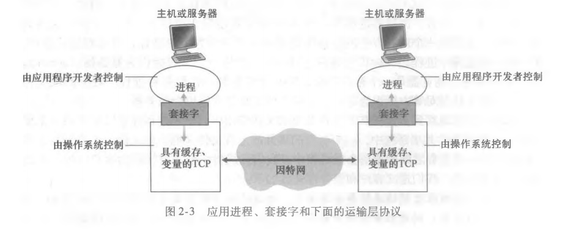
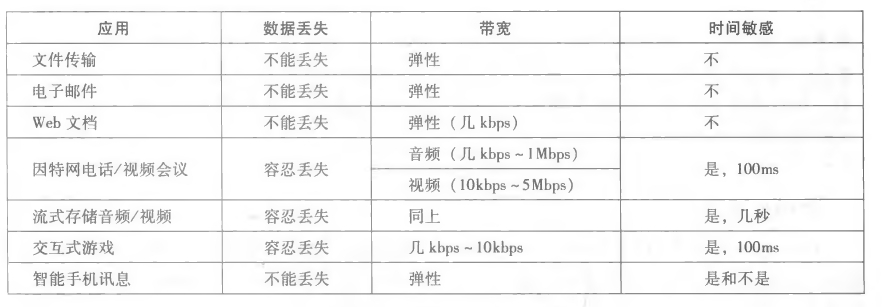
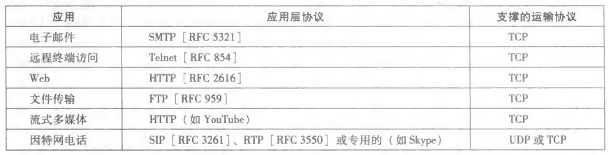
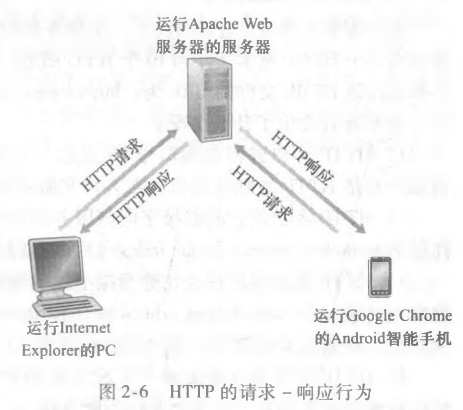
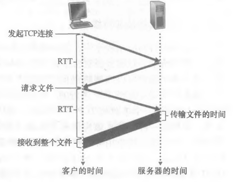
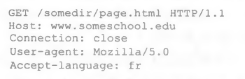
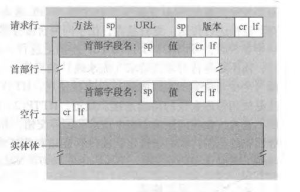
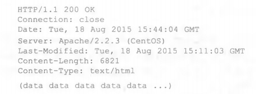
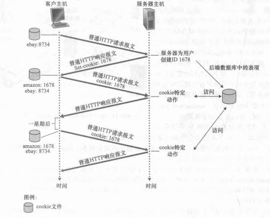

# 应用层
# 应用层协议原理
# 网络应用程序体系架构
应用程序体系结构（application architecture）由应用程序研发者设计，规定了如何在各种端系统上组织这个应用程序。
目前的现代网络应用程序中一般会选择两种主流架构：客户 - 服务器体系结构和对等（P2P）体系结构
# 客户 - 服务器体系结构
服务器是一个总是处于开机状态的主机，它服务于来自许多其他称为客户的主机的请求。
# 特征
- 两个或多个客户之间是不会直接建立通信的；
- 服务器具有固定的、周知的地址，即 IP 地址
# 应用
Web、FTP（文件传输协议）、Telnet（一种远程登录的协议）、电子邮件……
# 其他你需要知道的
由于使用互联网的人很多，向服务器发送的请求也很多，想要一个服务器来服务所有请求是不现实的。
因此，数据中心的作用就体现出来了，它配备了大量的主机，用于创建一个强大的虚拟服务器。
它的应用想必都见过，例如搜索引擎 baidu，谷歌；Internet 商务亚马逊，阿里巴巴；社交网络 Facebook、推特
# P2P 体系结构
这个结构对位于数据中心的专用服务器具有很少的依赖（有时候可以没有），选用这种结构的应用程序在间断连接的主机对之间使用直接通信，这些主机对被称为对等方。
对等方的一些解释可以参考参考上一章网络的网络部分
# 特性
- 自扩展性。P2P 网络是由许多用户节点组成的，当有新的用户加入时，服务的需求虽然在增加，但是系统整体的资源和服务能力也随之扩充，能较大程度上满足用户的需求。在服务器组成的 P2P 网络中，只需增加服务器就能完成平滑的扩容。
- 成本低。P2P 网络或者应用程序一般是不需要庞大的服务器基础设施和服务器带宽（与客户 - 服务器相对）
# 进程通信
站在操作系统的角度，进行通信的实际上是进程而并非程序。
在两个不同端系统上的进程，通过跨越计算机网络交换报文来进行通信。
# 客户和服务器进程
网络应用程序由成对的进程组成，这些进程通过网络相互发送报文。
在这一对进程中，我们将其中之一标记为客户，另一个则是服务器了。
# 举个栗子
在 Web 的应用程序中，一个客户浏览器进程与一台服务器进程相互交换报文。此时浏览器就是客户进程，Web 服务器就是服务器进程。
在 P2P 文件共享系统中，文件从一个对等方进程传输到另一个对等方进程。此时下载方被标识为客户，上传方则被标识为服务器。
# 如何定义客户进程与服务器进程
以下定义基于一对进程之间的通信会话场景中
客户：发起通话的进程。
服务器：在会话开始时等待联系的进程。
# 进程与计算机网络之间的接口
进程通过一个套接字的软件接口向网络发送报文和从网络接收报文
下图是两个通过因特网通信的进程之间的套接字通信

在这个图中，套接字是同一台主机内应用层与运输层的接口，也是建立网络应用程序的可编程接口，因此也被称为网络应用程序接口（Application Programming Interface，API）
# 应用程序开发者对套接字的管理
从开发者的角度看，他们能够控制套接字在应用层上的一切。
对运输层的套接字的控制几乎是手足无措的，仅限于
- 选择运输层协议
- 设定几个运输层参数，如最大报文长度
# 进程寻址
一台主机上运行的进程如果想要向另一台主机上运行的进程发送分组，则需要让接收进程有一个地址。
为了让接收进程被标识到，我们需要两种信息：
- 主机的地址
- 在目的主机中指定接收进程的标识符
在因特网中，主机是由 IP 地址标识的。
除了 IP 地址标识外，还需要发送进程指定运行在接收主机的接收进程。端口号的作用就在于此。
# 可供应用程序使用的运输服务
在多种多样的运输服务中，我们可以通过四个方面对应用程序服务进行分类：可靠数据传输，吞吐量，定时，安全性
# 可靠数据传输
# 如何判断
某个服务能够做一些工作来确保某应用程序的一端发送的数据正确，且能完全地交付给该应用程序的另一端。
# 其他你可能要知道的
- 运输层协议能够潜在地向应用程序提供一种重要服务，这种服务是进程到进程的可靠数据传输。发送进程只要将其数据传递进套接字，就可以完全相信该数据能够无差错地到达接收进程。
- 如果运输层不提供这种服务，那大概率会被依赖这种服务的应用所排斥，但可能会被容忍丢失的应用接受，如一些多媒体应用，它的部分数据丢失一般只会导致卡顿或者音频被干扰等问题，但问题不大
# 应用
电子邮件，文件传输，金融应用等等
# 吞吐量
单位： 比特 / 秒 => bit/s
带宽敏感的应用（bandwidth-sensitive application）：对吞吐量有要求的应用程序。
弹性应用（elastic application）：说白了，能够根据带宽状态动态调整吞吐量。
# 因特网提供的运输服务
因特网为应用程序提供了两个运输层协议，分别为 UDP 和 TCP。
附：应用程序的服务要求

# TCP 服务
TCP 服务的模型包括：面向连接服务和可靠数据传输服务
有拥塞控制机制
# UDP 服务
UDP 仅提供最小的服务，是无连接的，因此在进行连接的时候没有握手过程，且并不能保证报文能到达接收进程，到了也有可能是乱序的
没有拥塞控制机制（不过有的时候，实际的端到端吞吐量可能小于选定的任意速率，因为中间链路的带宽可能会受限或者拥塞导致的）
# 因特网不提供的服务
运输层协议不提供吞吐量和定时保证的服务
下图是因特网应用所使用的协议

# 应用层协议
定义了运行在不同端系统上的应用程序进程如何相互传递报文。
- 交换的报文类型，例如请求报文，响应报文
- 各种类型报文的语法，例如报文中的字段和字段的描述
- 字段的语义，即这些字段的信息的含义
- 确定一个进程什么时候，怎么发送报文，对报文响应的规则
# 这一章涉及到的网络应用
Web、文件传输、电子邮件、目录服务、流式视频和 P2P
# Web 和 HTTP
# HTTP 概况
超文本运输协议（HyperText Transfer Protocol, HTTP）由客户程序和服务器程序实现，它们通过交换 HTTP 报文进行会话。同时，HTTP 定义了这些报文的结构以及客户和服务器进行报文交换的方式。
Web 页面（Web page，也叫文档）由对象组成，而对象只是一个文件，例如 HTML 文件，JPEG 图形等等。其中，大多数 Web 页面都会含有一个 HTML 文件和几个引用对象，其对象数量就是引用对象的数量加上 HTML 文件数（说白了就是 N+1 个对象）
Web 服务器实现了 HTTP 的客户端（所以在 Web 环境中经常会交替使用” 浏览器 “和” 客户 “两种术语），也实现了 HTTP 的服务器端（用于存储 Web 对象，每个对象由 URL 寻址）
HTML 基本文件是通过对象的 URL 地址来引用页面的其他对象，形如 http://www.example.com/path/to/sth 都是 URL 地址，其中 www.example.com 是主机名，而 /path/to/sth 是路径名
HTTP 定义了 Web 客户向 Web 服务器请求 Web 页面的方式，以及服务器向客户传送 Web 页面的方式，基本思想如下图：

- 用户请求一个 Web 页面；
- 浏览器向服务器发出该页面中所包含对象的 HTTP 请求报文；
- 服务器接收请求并用包含这些对象的 HTTP 响应报文进行相应
# 无状态协议
HTTP 服务器不保存关于用户的任何信息，这里涉及到一个关于 HTTP 的现象：服务器向客户发送被请求的文件，但是不存储任何关于用户的状态信息。
Web 使用的是客户 - 服务器应用程序体系架构，其实看了图示也差不多可以想到了
# 非持续链接和持续链接
# 非持续连接（non-persistent connection）
每一个请求 / 响应对经过一个单独的 TCP 连接发送。
假设 URL 为 http://www.example.com/path/to/sth ，且其中包含一个 HTML 文件和 N 个 JPEG 图形文件，我们来看看服务端向客户传送一个 Web 页面的步骤：
- HTTP 客户进程在默认端口号 80 发起一个到服务器
http://www.example.com的 TCP 连接，在客户与服务器上分别有一个套接字与该连接相关联； - HTTP 客户经过自己的套接字向服务器发送一个 HTTP 请求报文，请求报文中包含了路径名
/path/to/sth； - HTTP 服务器进程经过自己的套接字接收该请求报文，从自己的存储器中检索对象
http://www.example.com/path/to/sth，并将其封装到一个 HTTP 响应报文中； - HTTP 服务器进程通知 TCP 断开 TCP 连接。（当然了，要等 TCP 确认客户已经收到完整的响应报文后，它才会断开连接）；
- HTTP 客户接收响应报文，TCP 连接关闭。报文指出封装对象是一个 HTML 文件，客户从报文提取该文件，检查 HTML 文件后得到 N 个 JPEG 图形文件；
- 对每一个引用的 JPEG 图形对象重复前 4 个步骤。
经过上述步骤，用户在请求该 Web 页面时，需要产生 N+1 个 TCP 连接
往返时间（RTT，Round-Trip Time）：指一个短分组从客户到服务器然后再返回客户所花费的时间
RTT 包括分组传播时延、分组在中间路由器和交换机上的排队时延和分组处理时延。

（涉及到三次握手，这个后面再说）
- 客户请求 Web 页面时，会先请求建立一个 TCP 连接。客户向服务器发送一个 TCP 报文段，服务器再向客户发送一个 TCP 报文段来作出请求与回应；（占用一个 RTT）
- 客户发送一个 HTTP 请求报文，报文到达服务器后，服务器就会发送响应报文（占用一个 RTT）
- 后面传输文件的事情就另算了
因此总的时间是 2RTT + 传输文件的时间
# 持续连接（persistent connection）
所有的请求 / 响应对经过相同的 TCP 连接发送。
相对地，在这个方式下，服务器在发送响应后并不会通知 TCP 关闭连接，而是保持打开状态，因此后续的请求和响应报文能通过相同的连接进行传送。
说白了，按照上一个连接的例子，需要用到的 TCP 连接数就会从 N+1 个变成 1 个
# HTTP 报文格式
# 请求报文
拿书上的例子说说：

第一行为请求行（request line），后面的全部为首部行（header line）。
上图可以看出，请求行有三个部分：方法字段、URL 字段和 HTTP 版本字段。其中，请求方法有很多：GET、POST、DELETE、PUT、HEAD。
再来看看首部行：
- Host：指明对象所在的主机；
- Connection：close 代表非持续连接，open 代表持续连接（我记得是 open 吧）；
- User-Agent：指明用户代理，也相当于指明发送请求的浏览器的类型；
- Accept-language：表示用户想得到该对象的语言版本，服务器不存在这样的对象就发送默认语言版本
下图是请求报文的通用格式：

# 响应报文
接着拿书上的例子

响应报文有三个部分：一个初始状态行（status line），若干个首部行（header line），实体体（entity body）
状态行包含三个信息：协议版本字段，状态码，状态信息
首部行：
- Connection：不赘述；
- Date：服务器产生并发送报文的时间；
- Server：表示报文是由某个服务器产生的；
- Last-Modified：对象创建或者最后修改的日期和时间（这个后面再说）；
- Content-Length：被发送对象中的字节数（应该是指实体体）；
- Content-Type：指示实体体中的对象是什么类型的文本
实体体包含了请求的对象本身（data data data……）
状态码有点不想说，我直接把官方的文档放这了 -> click me
# 用户与服务器的交互：cookie
cookie 允许站点对用户进行追踪。
至于有什么用，举个例子：我访问 github.com ，但我想访问之后直接到与我有关的界面，这样就可以省去登录步骤，这个时候 cookie 就发挥了作用，它会保持我在这个网站的登录状态，以防一些不必要的登录。
不过呢，不同的浏览器 cookie 肯定是不同的，例如火狐登录了 csdn，之后就可以省去登录步骤；IE 没有登陆过，必须要登录
当然，咱之前玩的小游戏有需要存档的，也用到了 cookie
下图表示 cookie 跟踪用户的状态

根据上图可以得知，cookie 技术有四个组件：
- HTTP 响应报文的一个 cookie 首部行；
- HTTP 请求报文的一个 cookie 首部行；
- 用户端系统中保留有一个 cookie 文件，由用户的浏览器管理；
- Web 站点的一个后端数据库